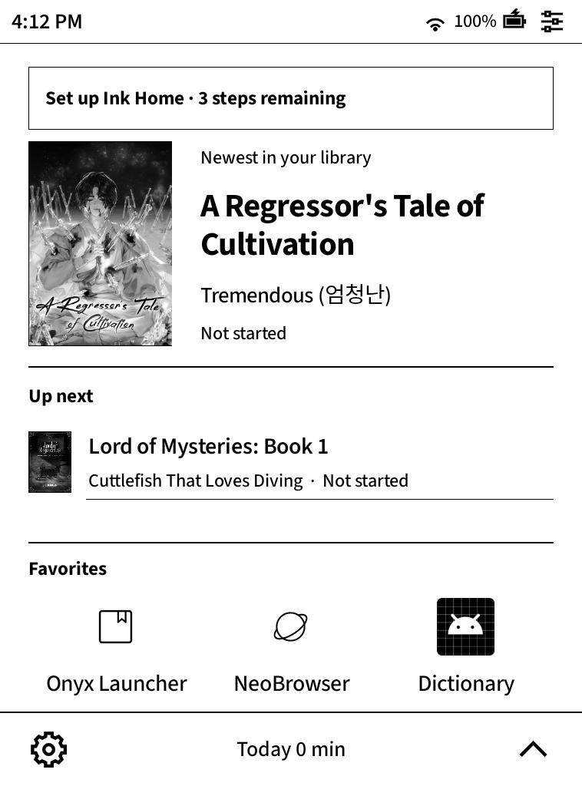

Ink Home
A calm, reading-first home screen for e-ink Android tablets.

What it does
Your current book
The cover, title, progress and the app it opens in, straight from NeoReader or the reader you choose.
A real library
Covers pulled from EPUB, PDF and CBZ files. Reading, All, Finished and Collections, with search, sort and filters.
Reading time
Minutes per day and per book, streaks, a weekly chart and a monthly calendar. A daily goal is there if you want one.
A built-in reader
EPUB and TXT laid out natively for e-ink: tap, swipe or page keys, contents, text settings, and a full refresh every few pages. Or use NeoReader, KOReader or any other app.
Made for e-ink
Turn pages with hardware keys or the on-screen arrows. Clean screen requests a gentle update on compatible firmware. For persistent ghosting, choose Strong clean now in Display & refresh.
Its own status bar
Clock, Wi-Fi, battery and notifications, plus a quick panel with only what your tablet's hardware has.
Sleep screen and wallpaper
Generate sleep artwork sized to your panel, then select it in your device’s screensaver settings. On Boox, select the image again after changing it.
An optional Ink dot
Tap the floating dot for a gentle refresh, or hold it for Strong clean. When gentle refresh is unavailable, the dot tells you. Inside Ink Home, Clean screen falls back to redrawing the window.
Display choices
Choose monochrome e-ink, colour e-ink or LCD/OLED in Display & refresh. On LCD and OLED, lists default to scrolling and the theme can follow Android.
Small and private
No accounts, no tracking, no ads. It only goes online to check for its own updates.
Install
- On the tablet, download ink-home.apk and open it. Allow installing from your browser or file manager if Android asks.
- Open Ink Home and let it see your files, so it can find your books.
- Press Home and choose Ink Home, then Always.
From a computer with adb, this does the same and grants the permissions in one go:
adb install ink-home.apk adb shell appops set dev.inkhome MANAGE_EXTERNAL_STORAGE allow adb shell appops set dev.inkhome GET_USAGE_STATS allow adb shell cmd package set-home-activity dev.inkhome/.MainActivity
Updates
Ink Home checks this project's releases about twice a day when you're on Wi-Fi. When there's a new version it asks first, downloads it, checks the SHA-256 when the release includes a checksum, and hands it to Android to install. Android only accepts it if it's signed by the same key as the version you have. You can turn the check off in Settings › Updates.
Build it yourself
You need JDK 17 and the Android SDK.
git clone https://github.com/Nyaughh/ink-home cd ink-home ./gradlew assembleRelease
For development, run ./gradlew assembleDebug test. Open Ink Home dev from your apps. It has its own permissions and settings and installs alongside the release.
Builds without the release key are signed with your debug key, so they can't update an installed official copy.